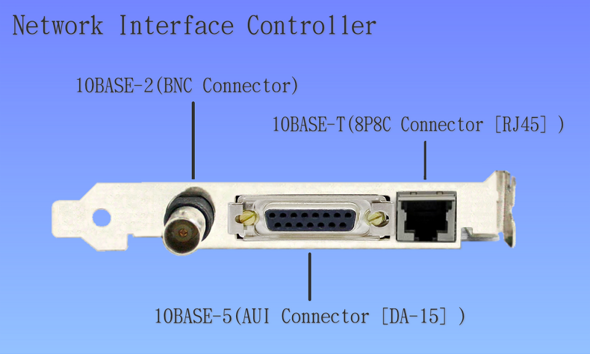
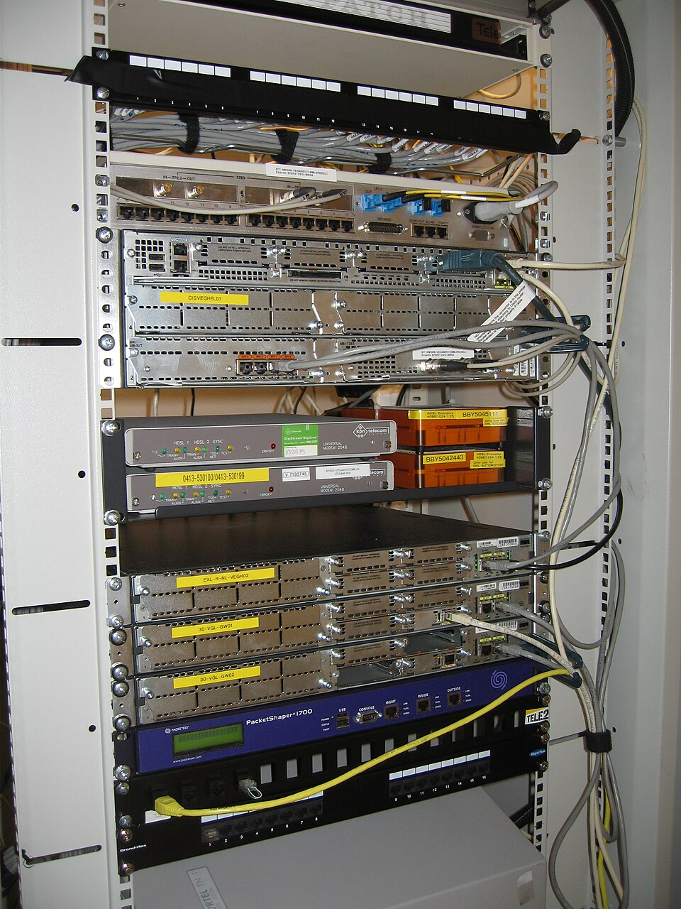

Tipos de redes
Una red de computadoras es un conjunto de equipos, dispositivos y enlaces de comunicación interconectados que comparten recursos (archivos, impresoras, conexión a Internet) e intercambian información. El estudio de los tipos de red es la puerta de entrada a toda la asignatura: condiciona qué tecnologías, protocolos, equipos y costes intervienen. No existe una única red universal; en la práctica conviven redes de muy distinta naturaleza y se interconectan entre sí.

1. Clasificación por alcance geográfico (la más usada en FP)
El criterio predominante en los currículos de Sistemas Informáticos es el alcance físico, porque determina directamente las tecnologías empleadas:
- PAN — Personal Area Network: redes de muy corto alcance (habitualmente menos de 10 metros) para interconectar dispositivos personales del usuario: teléfono móvil, auriculares Bluetooth, smartwatch, teclado y ratón inalámbricos, altavoces. Tecnologías típicas: Bluetooth (clásico y BLE), Zigbee, Z-Wave, NFC y conexión por USB. Su objetivo es la comodidad y la sincronización de dispositivos, no el rendimiento.
- LAN — Local Area Network: red de área local, típicamente un edificio, una planta o un aula. Ofrece alta velocidad (100 Mbps a 10 Gbps) y baja latencia. Se apoya en Ethernet (IEEE 802.3) sobre par trenzado o fibra, y en Wi-Fi (IEEE 802.11) para la parte inalámbrica. Suele ser administrada: hay un switch que conmuta el tráfico y un servidor o router que da servicios (DHCP, DNS, archivos).
- WLAN — Wireless LAN: es simplemente la variante inalámbrica de una LAN, basada en Wi-Fi. Misma lógica de red local, pero sin cableado estructurado hasta el equipo final; el último tramo es radioeléctrico.
- MAN — Metropolitan Area Network: cubre una ciudad o un campus universitario/industrial extenso. Ejemplos: la red de fibra de un ayuntamiento, la red de un metro, o la interconexión de los centros de una universidad. Combina enlaces contratados a operadores y, a menudo, tecnologías de fibra propia.
- WAN — Wide Area Network: redes de gran alcance, que pueden abarcar un país o el planeta. Internet es la WAN mayor del mundo. Conecta LANs geográficamente separadas mediante enlaces de operadores (MPLS, fibra oscura, satélite, enlaces 4G/5G) y protocolos de enrutamiento como BGP.
| Tipo | Alcance aproximado | Velocidad típica | Tecnología dominante | Ejemplo real |
|---|---|---|---|---|
| PAN | <10 m | 1–50 Mbps | Bluetooth/NFC/USB | Móvil + auriculares |
| LAN | 1 edificio / aula | 100 Mbps–10 Gbps | Ethernet + Wi-Fi | Aula de informática |
| WLAN | Edificio | 100 Mbps–1 Gbps | Wi-Fi 5/6 | Oficina sin cables |
| MAN | Ciudad / campus | 1–10 Gbps | Fibra de operador | Red de campus universitario |
| WAN | País / mundo | 10 Mbps–100 Gbps | MPLS / satélite / Internet | VPN entre sedes de una empresa |

2. Clasificación por arquitectura: cliente-servidor frente a P2P
Más allá del alcance, la forma en que se relacionan los equipos define dos modelos:
Cliente-servidor
Existen equipos dedicados a servir recursos (servidor de archivos, de impresión, web, DNS, correo) y clientes que los consumen. Ventajas: centraliza la administración, la seguridad, las copias de seguridad y el control de acceso. Inconvenientes: requiere al menos un servidor con capacidad y es un punto crítico (si cae el servidor, caen los servicios).
P2P (peer-to-peer)
Todos los equipos actúan a la vez como clientes y servidores y comparten recursos directamente (compartición de archivos, redes Blockchain, algunas aplicaciones de mensajería). Ventajas: muy económico de montar y resiliente (no hay SPOF). Inconvenientes: difícil de administrar y asegurar de forma centralizada, y el rendimiento depende de los pares.
graph LR
subgraph CS[Cliente-Servidor]
S[(Servidor)] --> C1[Cliente]
S --> C2[Cliente]
S --> C3[Cliente]
end
subgraph P2P[Peer-to-Peer]
N1<-->N2
N2<-->N3
N3<-->N1
end
mindmap
root((Tipos de red))
Por alcance
PAN
LAN
MAN
WAN
Por arquitectura
Cliente-Servidor
P2P
Por medio
Cableada
Inalámbrica
3. Clasificación por medio de transmisión
- Cableada: par trenzado (RJ45) y fibra óptica. Máxima estabilidad, velocidad y seguridad; requiere instalación de cableado estructurado.
- Inalámbrica: Wi-Fi, Bluetooth, 4G/5G, satélite, microondas. Aporta movilidad pero es más vulnerable a interferencias y seguridad.
4. Clasificación por ámbito de acceso
- Intranet: red privada interna de una organización (web corporativa, aplicaciones internas).
- Extranet: extiende acceso controlado de la intranet a socios, proveedores o clientes externos (ej. portal de pedidos).
- Internet: la red global pública que interconecta casi todas las redes anteriores.
5. Red conmutada frente a red de difusión
Según el mecanismo de entrega: una red conmutada establece un camino (switch, circuito) para cada comunicación; una red de difusión envía a todos los nodos (hub, medio compartido). El switch moderno convierte la LAN en conmutada, eliminando los dominios de colisión.
Caso práctico: elegir el tipo de red
Un centro educativo quiere conectar 300 equipos en 10 aulas, una biblioteca y administración. Solución típica: una LAN cableada por aula (switch por aula) conectada a un router central que da salida WAN a Internet; una WLAN para dispositivos móviles del profesorado; y, si hay varios edificios, una MAN de fibra entre ellos. Los equipos del alumno usan el modelo cliente-servidor (servidor de archivos y directorio).
Ejemplo resuelto en clase
Caso práctico: Clasificar una red por alcance.
- Cuenta los equipos en el aula: todos en el mismo edificio → es una LAN.
- Si la conexión llega a otro centro del instituto → MAN (área metropolitana).
- Si llega a otra ciudad/país vía proveedor → WAN.
- Anota el medio: ¿cable de cobre, fibra u ondas?» para justificar la clasificación.
graph LR LAN[Aula] --> MAN[Instituto] MAN --> WAN[Internet]
Ejercicio para resolver (que propone el profesor al alumno): El alumno clasifica la red del centro y justifica LAN/MAN/WAN con el alcance real.
Ampliación de contenido
Para entender lo anterior (puentes conceptuales)
- "Tipo de red" responde a "¿para qué y dónde?". No es una etiqueta decorativa: PAN, LAN, MAN, WAN existen porque cambian el medio, el coste y los protocolos. Elegir el tipo es elegir la tecnología.
- Alcance, medio y arquitectura son ejes distintos. Una LAN puede ser cableada o Wi-Fi (medio); puede ser cliente-servidor o P2P (arquitectura). Por eso un mismo edificio se puede describir de varias formas según el eje que miremos.
- Conmutada vs difusión explica el rendimiento. El hub (difusión) hace que todos oigan todo y colisionen; el switch (conmutada) entrega solo al destinatario. Por eso el switch mató al hub.
Para profundizar en los contenidos actuales
PAN, LAN, MAN, WAN como escala. PAN (personal, <10 m), LAN (edificio), MAN (ciudad, p. ej. la red de un ayuntamiento o campus), WAN (país/continente, Internet). Cada salto de escala cambia el medio: de Bluetooth/USB (PAN) a Ethernet/fibra (LAN) a enlaces de operador (WAN).
Intranet/Extranet/Internet según quién entra. Intranet es la red interna privada; extranet abre una porción a externos concretos (proveedores); Internet es la red de redes pública. La frontera es el control de acceso, no la tecnología.
Cliente-servidor domina en organizaciones. Centraliza datos y seguridad (el servidor manda); P2P brilla para resiliencia y redes pequeñas sin infraestructura, pero complica la gestión y el cumplimiento.
Conmutada elimina dominios de colisión. Con hub (medio compartido) dos equipos que hablaban a la vez colisionaban y perdían el paquete. El switch aprende las MAC de cada puerto y entrega en unicast, así cada enlace es un dominio de colisión propio y se aprovecha mejor el ancho de banda.
Caso de diseño real. El ejemplo del centro (LAN por aula + router WAN + WLAN + MAN de fibra) muestra cómo se combinan los tipos: la red "es" LAN localmente y WAN para salir a Internet; la arquitectura es cliente-servidor con servidor de archivos/directorio.
Revisión didáctica
- WLAN no es "otro tipo" opuesto a LAN. Es la LAN inalámbrica; ambas pueden coexistir en el mismo edificio.
- MAN no es obligatoria siempre. Solo cuando hay distancia de ciudad o varios edificios; un aula suele ser solo LAN+WAN.
- Intranet ≠ Internet. Intranet es privada; con acceso a Internet se navega fuera. No son lo mismo.
- Switch (conmutada) ≠ Hub (difusión). El hub es obsoleto por colisiones; el switch entrega en destino.
- PAN suele ser Bluetooth/Zigbee, no Wi-Fi. Wi-Fi es LAN; PAN es corto alcance personal.
Hilo de aprendizaje sugerido: (1) ¿qué es una red? → (2) tipos por alcance (PAN/LAN/MAN/WAN) → (3) por medio (cableada/inalámbrica) → (4) por arquitectura (cliente-servidor/P2P) → (5) por acceso (intranet/extranet/Internet) → (6) conmutada vs difusión.
Enlaces relacionados
- Características de las redes
- Componentes de una red informática
- Topologías de red
- Criterio RA1-e: tipos de redes
Recursos externos
Vídeos y artículos recomendados para ampliar y preparar el tema: